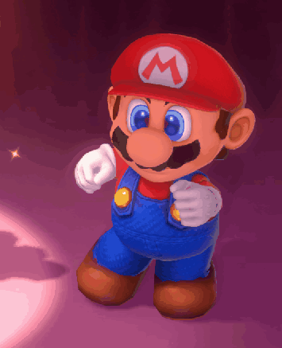

<!-- rad med stor bild och liten Mario bredvid -->

<div style="display: flex; justify-content: center; align-items: flex-start; gap: 20px; margin-top: 40px; flex-wrap: wrap;">

  

  <!-- stor bild -->

  


  <!-- liten Mario -->

  

  

</div>


